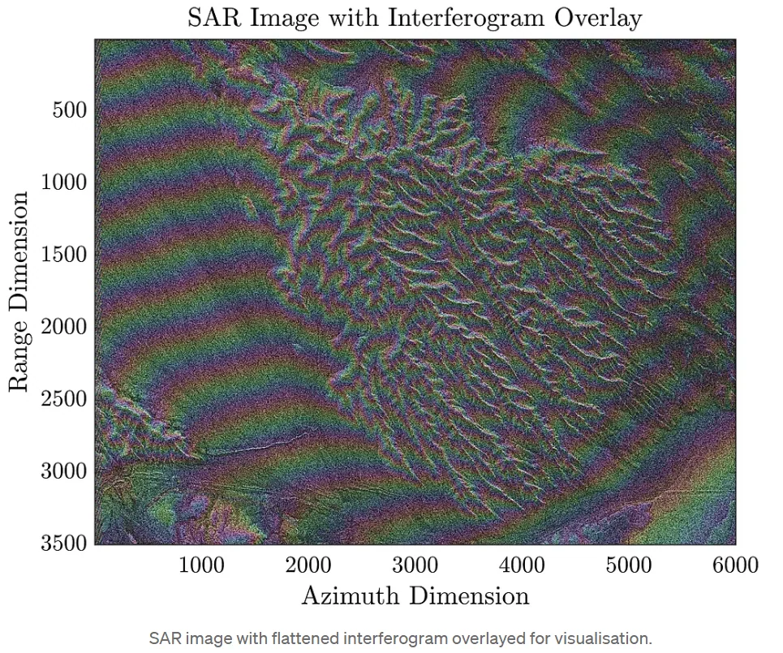
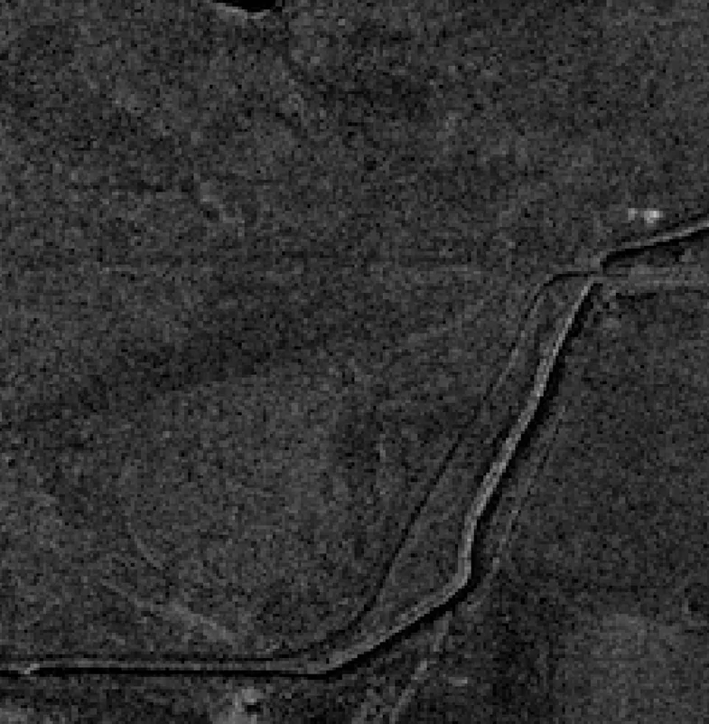
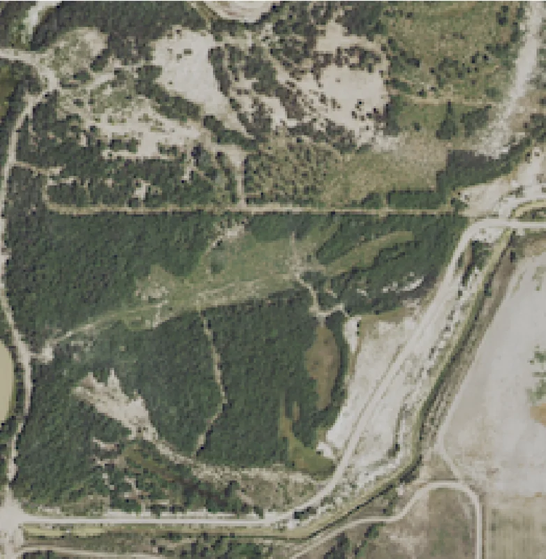

← 프로젝트 목록← All projects
초고해상도 SAR 화산 모니터링Volcano Monitoring with Very-High-Resolution SAR
25cm급 상용 SAR(Umbra)로 화산 지형을 관측하고, Sentinel-1(10m)과 해상도를 직접 비교함. SICD 포맷을 직접 파싱해 간섭 처리까지 시도함.Observed volcanic terrain with 25 cm commercial SAR (Umbra) and compared it directly against Sentinel-1 at 10 m — parsing SICD natively and attempting interferometry.
배경 · 목표Background
- 상용 초고해상도 SAR가 화산·지표 변위 모니터링에서 어디까지 쓸모 있는지 확인하고 싶었음.
- 인도네시아 디엥(Dieng) 화산과 남극 에레부스(Erebus) 화산을 대상으로 함.
- Wanted to see how far commercial VHR SAR goes for volcano and deformation monitoring.
- Targets: Dieng volcano in Indonesia and Mount Erebus in Antarctica.
방법Method
- Umbra SICD(NITF) 포맷을 직접 파싱해 복소수 SAR 데이터를 읽는 코드 작성.
- GEC(Geocoded Ellipsoid Corrected) 산출물과 SICD 복소영상 비교.
- Sentinel-1(10 m)과 Umbra(25 cm) 해상도 직접 비교 — 동일 지역, 동일 대상.
- 스트립맵과 스캔 모드의 관측 기하 차이 정리.
- 간섭도 생성 및 SAR 영상 위 중첩 시각화.
- Wrote code to parse Umbra SICD (NITF) directly and read the complex SAR data.
- Compared geocoded GEC products against the SICD complex imagery.
- Direct resolution comparison, Sentinel-1 (10 m) vs Umbra (25 cm), same scene, same targets.
- Documented the acquisition-geometry differences between stripmap and scan modes.
- Generated interferograms and overlaid them on the SAR imagery.
결과Results
- Umbra SICD 복소 데이터 직접 읽기 코드 개발 (view_umbra_sicd.py)
- Sentinel-1 대비 해상도 비교 시각자료 제작 — 25cm에서는 개별 차량·구조물까지 식별
- 간섭도 생성 및 SAR 중첩 시각화 완성
- Working SICD complex-data reader (view_umbra_sicd.py).
- Visual resolution comparison against Sentinel-1 — at 25 cm, individual vehicles and structures are identifiable.
- Interferogram generation and SAR overlay visualisation.




배운 점 · 한계What I learned · Limitations
- SICD 같은 복소 SAR 표준 포맷의 구조를 직접 파싱하며 이해함.
- 해상도가 올라간다고 간섭 처리가 쉬워지지는 않는다 — 짧은 재방문 주기와 궤도 정밀도가 더 중요하다는 걸 알았음.
- Learned the structure of complex SAR standards like SICD by parsing them myself.
- Higher resolution does not make interferometry easier — short revisit and orbital precision matter more.
관련 코드Code
sar/umbra/
저장소는 센서 → 위성 → 기법 순으로 정리돼 있고, 각 폴더에 입력·출력 표가 있음.The repository is organised by sensor, satellite and technique; each folder documents its inputs and outputs.
코드 저장소는 비공개입니다. 열람이 필요하시면 아래 연락처로 알려주시면 접근 권한을 드립니다.The code repository is private. Email me and I will grant you access.
산출물Deliverables
- view_umbra_sicd.py
- Umbra SAR 분석 자료
- view_umbra_sicd.py
- Umbra SAR analysis
원본 보고서와 발표자료는 사내 자료로 공개하지 않음. 분석 코드는 GitHub에 정리되어 있음.Source reports and decks are internal and not published here. Analysis code is organised on GitHub.